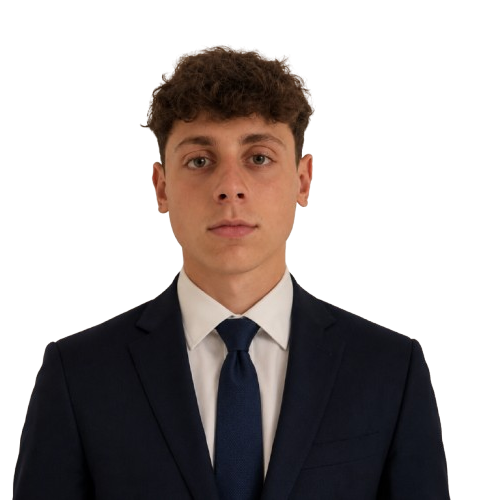

Sviluppo Prodotto & CAD
Progettazione integrata dall'ideazione concettuale alla definizione geometrica finale dell'hardware. Gestisco lo sviluppo di sistemi complessi ottimizzando tolleranze e accoppiamenti meccanici per garantire la massima funzionalità dell'assieme.
- Modellazione solida e di superficie
- Ingegnerizzazione di assiemi complessi
- Messa in tavola e quotatura geometrica
- Ottimizzazione dei costi di produzione
Calcolo Computazionale
Validazione strutturale e fluidodinamica tramite simulazioni numeriche avanzate. Analizzo il comportamento dei materiali sotto carico meccanico e termico per garantire sicurezza strutturale, massime prestazioni e prevenzione dei cedimenti a fatica.
- Analisi strutturali statiche lineari
- Analisi modali e risonanze meccaniche
- Simulazioni a fatica e vita dei componenti
- Verifica termo-fluidodinamica dei flussi
Industrializzazione
Integrazione tra design ingegneristico e processi produttivi di officina. Trasformo i modelli matematici CAD in particolari pronti per la fabbricazione di serie, riducendo gli scarti di materiale e ottimizzando i tempi di setup delle macchine.
- Design for Manufacturing (DFM)
- Programmazione cicli di lavoro CNC
- Sviluppo componenti in Additive (3D)
- Scelta materiali e trattamenti termici
Progettazione Meccanica Avanzata
Trasformo concetti complessi in soluzioni hardware funzionali, combinando rigore analitico, modellazione industriale e calcolo computazionale per mercati ad alte prestazioni.
Curriculum Vitae
Studente di Ingegneria Meccanica fortemente motivato e appassionato di progettazione e innovazione tecnologica. Desidero applicare le prime competenze accademiche in un contesto aziendale dinamico, attraverso un'opportunità di stage o un lavoro part-time, per sviluppare solide basi professionali nel settore.
Esperienze Formative
Università degli Studi
2025 - 2026 | In Corso
Studente di Ingegneria Meccanica
- Sviluppo di un solido approccio metodologico applicato all'analisi matematica e alla fisica.
- Gestione autonoma dei flussi di lavoro e pianificazione degli obiettivi di studio a lungo termine.
Aptar Italia
2024
Project Work PCTO (Alternanza Scuola-Lavoro)
- Studio sul campo dei processi industriali e dei macchinari per la produzione di sistemi di erogazione e dosatori.
- Osservazione diretta delle linee di assemblaggio, automazione e dei criteri di controllo qualità in fabbrica.
Soggiorno Studio - Siviglia
2023
Partecipante a Progetto di Immersione Linguistica
- Frequenza di un percorso intensivo per il potenziamento delle competenze in lingua inglese e spagnola.
- Sviluppo di spiccate capacità di adattamento, indipendenza e comunicazione in contesti multiculturali.
Certificazioni
Attestato di Formazione Sicurezza sul Lavoro (Rischio Medio) 2026
Certificazione delle competenze in materia di prevenzione, protezione e gestione dei rischi sul luogo di lavoro.
Attestato di Formazione Sicurezza sul Lavoro (Rischio Basso) 2026
Acquisizione dei concetti generali di sicurezza e dei diritti/doveri dei lavoratori secondo la normativa vigente.
Progetti R&D Recenti
Ottimizzazione Scambiatore
Analisi CFD termofluidodinamica per migliorare l'efficienza del 15% su un impianto industriale a recupero termico. Il progetto ha previsto la riprogettazione dei canali interni del fluido per minimizzare le perdite di carico e massimizzare il coefficiente di scambio termico globale, riducendo l'impronta carbonica del sistema.
Tools: Ansys Fluent, SolidWorksBraccio Robotico Articolato
Modellazione CAD 3D cinematica e calcolo strutturale di components in lega leggera sottoposti ad alti cicli di lavoro. Grazie all'ottimizzazione topologica basata su vincoli di rigidezza, è stata ridotta la massa globale del braccio del 22%, consentendo un incremento delle accelerazioni e riducendo l'usura dei motori elettrici.
Tools: Altair OptiStruct, CreoConsulenze e Servizi Tech
Modellazione CAD Avanzata
Sviluppo di modelli parametrici di parti e assiemi complessi. Elaborazione di disegni tecnici esecutivi, viste esplose e messe in tavola di officina rigorosamente conformi alle normative ISO/ASME, con specifica indicazione delle tolleranze geometriche e dimensionali (GD&T) necessarie alla produzione di serie.
Calcolo e Simulazione
Ingegneria assistita dal computer (CAE). Esecuzione di analisi statiche e dinamiche, analisi modali, strutturali e simulazioni termo-meccaniche lineari e non lineari sui materiali metallici e polimerici. Redazione di relazioni di calcolo tecniche certificate a supporto della conformità e della sicurezza del prodotto.
Contatti & Riferimenti
Hai bisogno di un supporto ingegneristico specialistico o vuoi avviare una collaborazione? Utilizza i recapiti diretti o i riferimenti accademici riportati di seguito.
Recapiti Diretti
-
Telefono 3318010294
-
Email Professionale gennarorega2006@gmail.com
-
Sede Operativa Via Contrati 44, Ferrara
Riferimenti Accademici
UNIFE
Università di Ingegneria (FE)
-
Telefono Segreteria 0532 974924
-
Email Istituzionale segreteria.ingegneria@unife.it